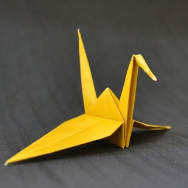
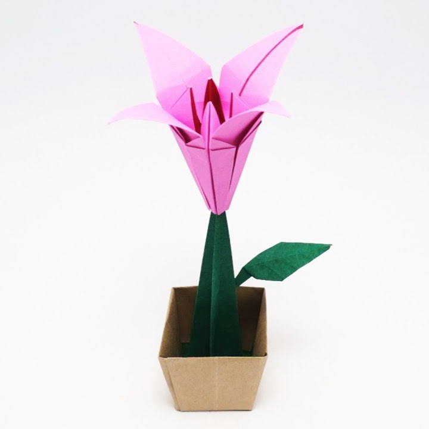
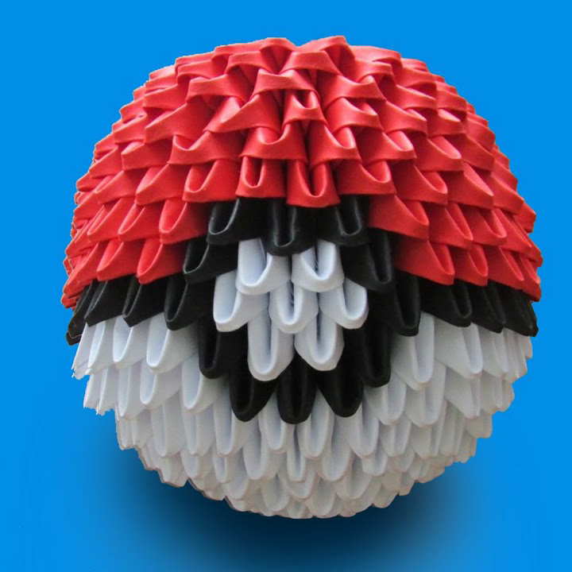
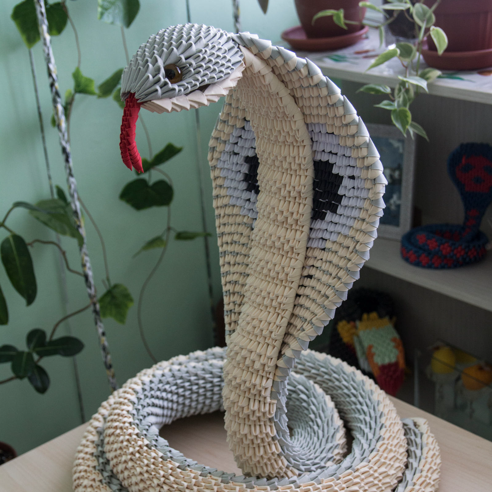
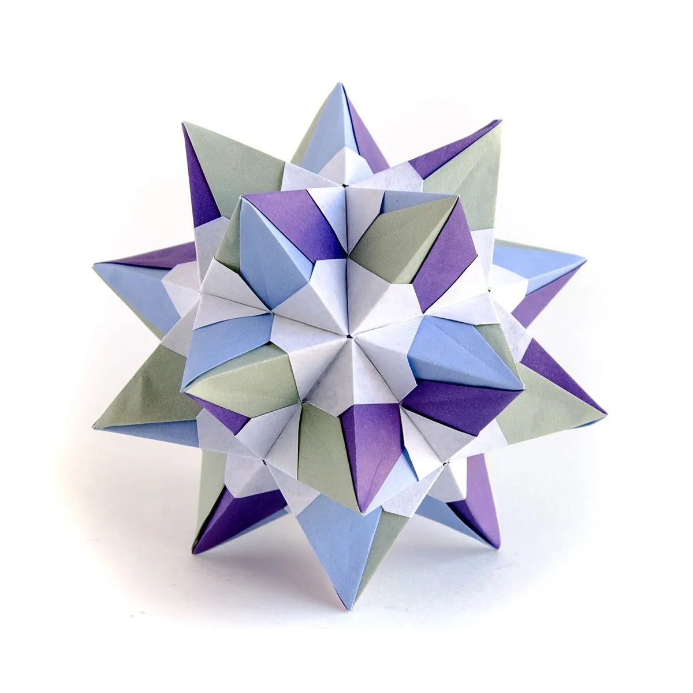
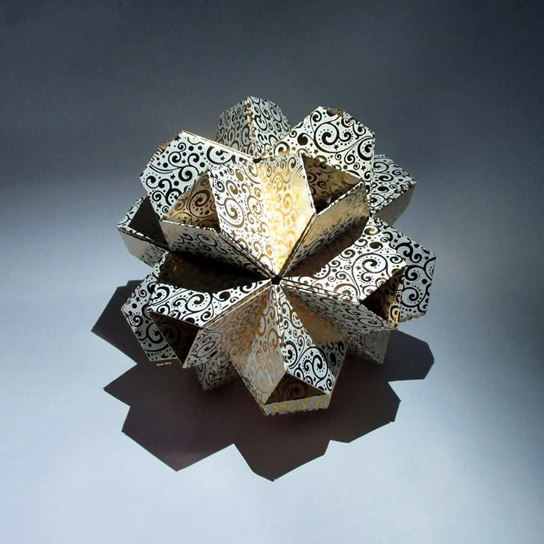
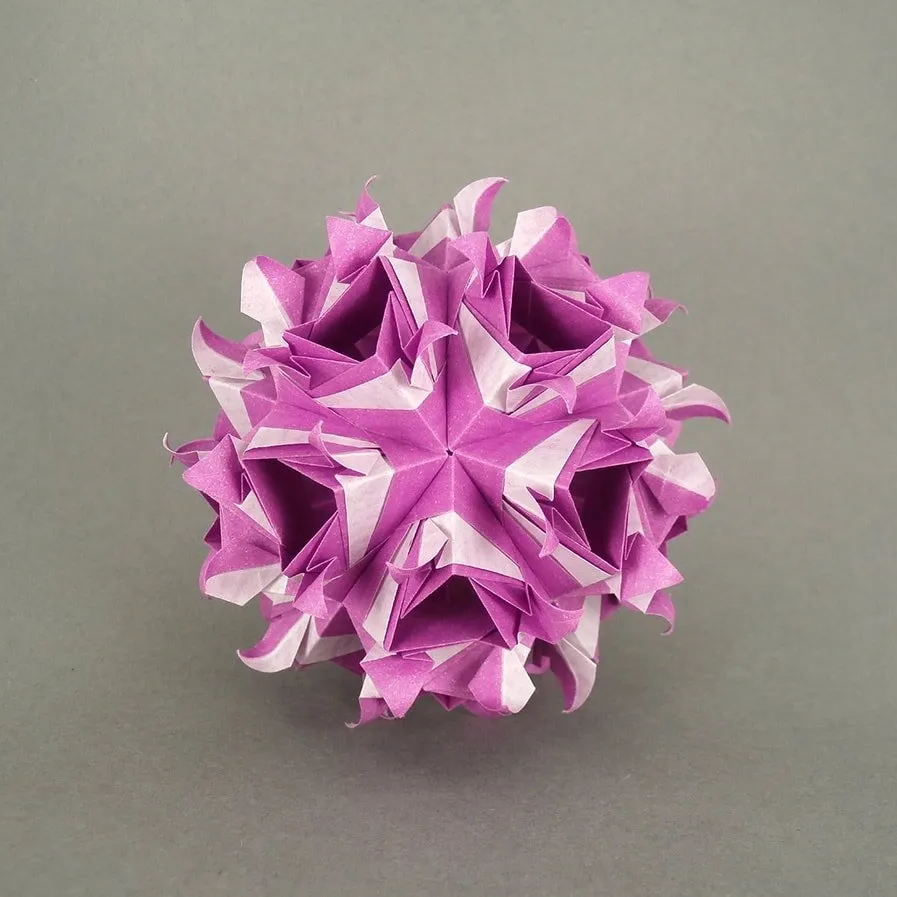

Home
Produtos
Contato
Produtos
Nós trabalhamos com vários tipos de origami, conheça algumas das nossas especialidades:
Origami tradicional

Tsuru
Um dos origamis mais clássicos de todos, não é a toa que ele é a logo do nosso site, o Tsuru é um modelo de origami que já vem sendo feito a centenas de anos, apesar de sua simplicidade ele expressa bem o que é o origami.

Lily
Uma flor de origami, apesar de simples é um modelo muito bonito, a flor de lírio é uma das mais populares entre os modelos de origami, devido à sua elegância e beleza natural. É um ótimo presente para o dia dos namorados, para aquela pessoa que gosta de flores mas não quer se preocupar em cuidar dela.
Marca páginas de gato
Esse marca páginas de gato é para você que gosta de leitura e quer marcar suas páginas com estilo.
Origami 3D

Pokebola
Quem é nerd não fica de fora com esse modelo de Pokebola, apesar de simples é um ótimo ítem para mostrar do que você gosta na sua decoração.

Cobra
O nosso modelo mais complexo, usando mais de 7 mil peças e várias técnicas diferentes de montagem, você não vai se arrepender de adquirir esse modelo.
Barco
Este barco em origami tem um design realista, com vários detalhes que tornam sua aparência ainda mais impressionante, com suas cores vibrantes e design complexo, este barco de origami é uma peça de decoração perfeita para qualquer ambiente.
Kusudamas

Caliope
Um modelo desenvolvido pelo mestre Ekaterina Lukasheva, não possui cola nem fita, uma das magias das Kusudamas.

Little Turtle
Esse modelo foi feito por Tomoko Fuse e foi desenvolvido com inspiração nas tartarugas, é feito com papel de alta qualidade e é ótimo para decoração do seu escritório.

Maiko var
Este modelo está qui para mostrar que Kusudamas não precisam ser sempre retas, este modelo desenvolvido por Masha Athanasiadi quebra os padrões e usa curvas.